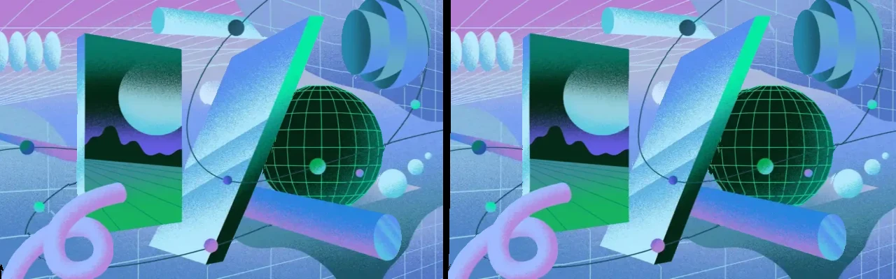
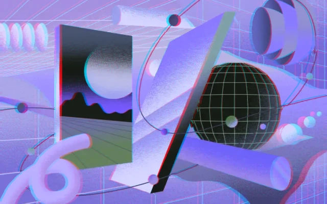

From 2D to 3D New
A depth model running on the device builds the second eye: live while you watch, or as a full-quality 3D file that replaces the flat one.
Android · Meta Quest 2, 3, 3S, Pro
VRClip saves video and audio from hundreds of sites and plays it the way it was meant to be seen: 360° and 180° around you, stereo 3D in real depth, and flat video turned into 3D right on your device.
Features
A depth model running on the device builds the second eye: live while you watch, or as a full-quality 3D file that replaces the flat one.
Paste or share a link: yt-dlp picks the formats, aria2c can speed up the transfer, and cover art, chapters and subtitles can be embedded in the file.
The player reads the projection from the file's metadata, its name or its shape. Look around by moving the phone, use a Cardboard viewer or red and cyan glasses.
The library is a regular panel; playback opens an immersive scene built with the Meta Spatial SDK, with a real stereo screen, passthrough and a control bar you can move.
New versions install from inside the app, only after the file's checksum and signature match the official release.
No accounts, no analytics, no ads. Files and history stay on your device.
Screenshots
VRClip on a phone, a tablet and Meta Quest. Select a screen to see it full size.
2D → 3D
VRClip estimates how far every point of the picture is with Depth Anything V2 Small, a depth model that runs on the phone's or headset's GPU. From the picture and its depth it draws what each eye would see, filling the gaps behind near objects with the background next to them.
In the player the conversion runs live. From the library it processes every frame at full quality and, once the new file checks out, replaces the flat video with a side-by-side 3D one. The model is downloaded once (about 90 MB) and verified before use.


Drag across the picture, or just watch: every point moves according to its depth. 1. The flat frame 2. Estimated depth (light is near) 3. Left and right eye, side by side The same frame as a red and cyan anaglyph
GitHub
Loading the latest release notes from GitHub…
Android · Meta Quest
Use the download button at the top of this page on your phone: it picks the file for your device (arm64-v8a on nearly every phone of the last years).
Android asks once to allow installs from your browser. Confirm, then go back to the download.
Open the downloaded .apk from the notification or the Downloads folder and tap Install.
Give VRClip access to storage so it can save downloads in Download/VRClip, and allow notifications to follow progress. From then on the app updates itself.
Apps from outside the Meta Horizon Store need developer mode. Create a free developer organization at developers.meta.com with the account used on the headset, then in the Meta Horizon app on your phone open Devices, pick the headset, Headset settings, Developer mode, and switch it on. Restart the headset.
On a computer or phone, download the universal or arm64-v8a APK from this page (the button offers the right one).
Connect the headset to a computer with a USB-C cable, accept "Allow USB debugging" inside the headset, then install with SideQuest (drag the APK onto it) or from a terminal with adb install -r VRClip.apk. Recent Horizon OS versions can also install an APK opened from the Files app in the headset; if yours offers it, the cable is not needed.
In the headset open the app library and pick the Unknown sources filter (on some versions "Apps from unknown sources"). VRClip opens as a panel like any Horizon OS app.
Paste a link, or share one to VRClip from another app. When the download is done, open it from the Library: the player puts a large screen in front of you, or wraps 360° and 180° video around you. The control bar below the video has play, seek, 3D, projection, passthrough and recenter.
Press 3D on the control bar to convert while you watch, or open the video's details in the Library and choose Convert to 3D to create a permanent 3D file. The first time VRClip downloads the depth model.
Back leaves the player and brings the Library back. The control bar can be grabbed and moved; Recenter puts the screen and the bar in front of you again.
FAQ
Something else? Open an issue on GitHub.
Since 1.2 releases are signed with a new, permanent key. Android does not let an app signed with one key update an app signed with another, so the switch needs one reinstall: export your library from the Library menu (Export) if you want to keep it, uninstall VRClip, install 1.2. Downloaded files in Download/VRClip are not touched. After that, updates install from inside the app.
Android 9 or newer on phones and tablets (ARM and x86), and Meta Quest 2, 3, 3S and Pro.
In Download/VRClip on the device, or in the folder you choose in the settings.
It depends on the device's GPU and the video's length and resolution: it processes every frame, so expect it to take longer than the video itself on most phones. It keeps running with the screen off and shows its progress in a notification; the original stays untouched until the 3D file is complete.
No. It connects only to the sites you download from, to GitHub for updates and, if you use 2D to 3D, once to download the depth model from Qualcomm AI Hub's public server (or, if that fails, from VRClip's GitHub releases). See the privacy policy.
VRClip is a tool: respect the terms of the sites you use and the copyright of what you download.
Free, open source and without ads, for Android phones and tablets and for Meta Quest.